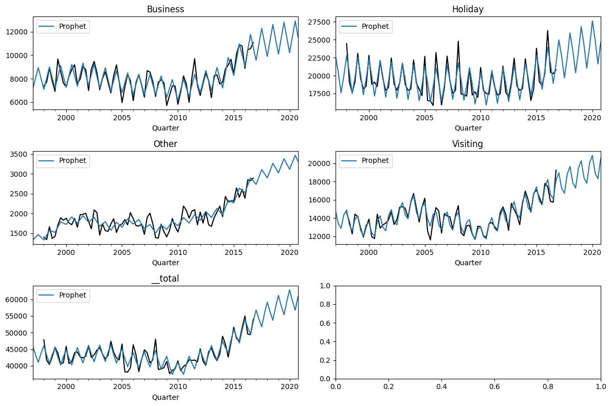
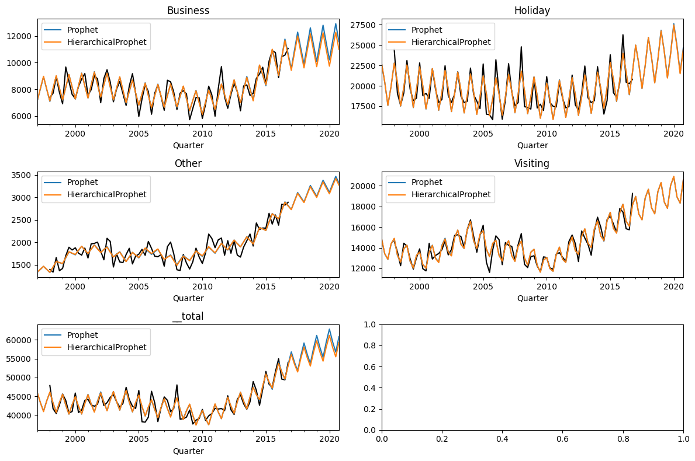
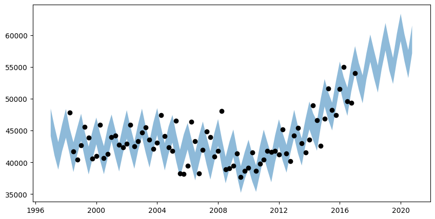
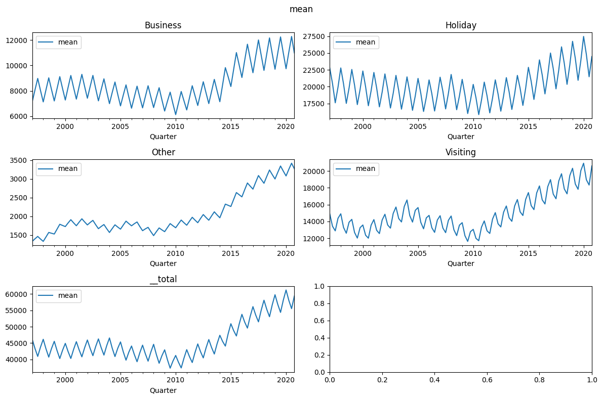
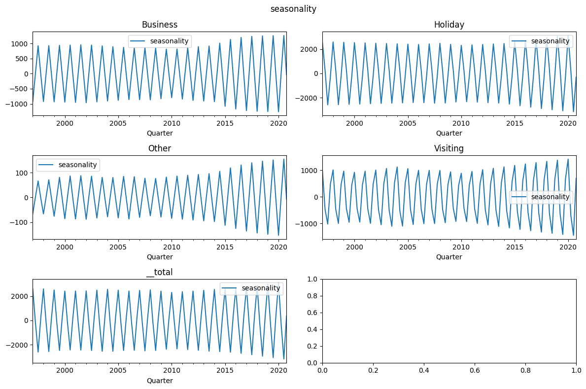
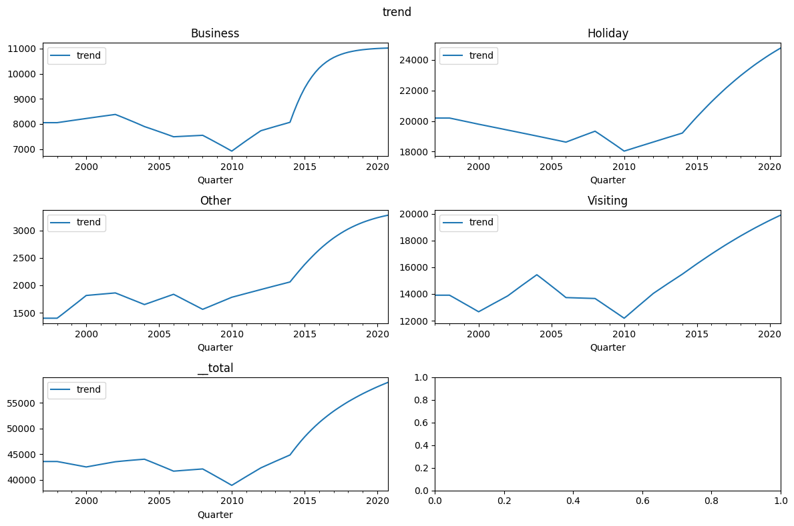

Hierarchical timeseries
In this example, we will show how to forecast hierarchical timeseries
with the univariate Prophetverse and HierarchicalProphet models
The univariate Prophetverse model can seamlessly handle hierarchical timeseries
due to the package's compatibility with sktime. The HierarchicalProphet model
is specifically designed to handle hierarchical timeseries, by forecasting all
bottom-level series at once.
Note
Currently, some features of the univariate Prophet are not available in the hierarchical version, such as likelihoods different from Gaussian. We are looking forward to adding these features in the future.
import matplotlib.pyplot as plt
import numpy as np
import pandas as pd
from prophetverse.datasets.loaders import load_tourism
Import dataset
Here we use the tourism dataset with purpose-level aggregation.
Output: [3]
| Trips | ||
|---|---|---|
| Purpose | Quarter | |
| Business | 1998Q1 | 7391.962068 |
| 1998Q2 | 7701.153191 | |
| 1998Q3 | 8911.852065 | |
| 1998Q4 | 7777.766525 | |
| 1999Q1 | 6917.257864 | |
| ... | ... | ... |
| __total | 2015Q4 | 51518.858354 |
| 2016Q1 | 54984.720748 | |
| 2016Q2 | 49583.595515 | |
| 2016Q3 | 49392.159616 | |
| 2016Q4 | 54034.155613 |
380 rows × 1 columns
We define the helper function below to plot the predictions and the observations.
LEVELS = y.index.get_level_values(0).unique()
def plot_preds(y=None, preds={}, axs=None):
if axs is None:
fig, axs = plt.subplots(
figsize=(12, 8), nrows=int(np.ceil(len(LEVELS) / 2)), ncols=2
)
ax_generator = iter(axs.flatten())
for level in LEVELS:
ax = next(ax_generator)
if y is not None:
y.loc[level].iloc[:, 0].rename("Observation").plot(
ax=ax, label="truth", color="black"
)
for name, _preds in preds.items():
_preds.loc[level].iloc[:, 0].rename(name).plot(ax=ax, legend=True)
ax.set_title(level)
# Tight layout
plt.tight_layout()
return ax
Fit univariate model
Because of sktime's amazing interface, we can use the univariate Prophet seamlessly with hierarchical data. We do not reconcile it here, but it could be achieved with the Reconciler class.
import jax.numpy as jnp
from prophetverse.effects import LinearFourierSeasonality
from prophetverse.effects.trend import (PiecewiseLinearTrend,
PiecewiseLogisticTrend)
from prophetverse.engine import MAPInferenceEngine
from prophetverse.sktime.univariate import Prophetverse
from prophetverse.utils import no_input_columns
model = Prophetverse(
trend=PiecewiseLogisticTrend(
changepoint_prior_scale=0.1,
changepoint_interval=8,
changepoint_range=-8,
),
exogenous_effects=[
(
"seasonality",
LinearFourierSeasonality(
sp_list=["Y"],
fourier_terms_list=[1],
freq="Q",
prior_scale=0.1,
effect_mode="multiplicative",
),
no_input_columns,
)
],
inference_engine=MAPInferenceEngine()
)
model.fit(y=y)
Output: [5]
Prophetverse(exogenous_effects=[('seasonality',
LinearFourierSeasonality(effect_mode='multiplicative',
fourier_terms_list=[1],
freq='Q',
prior_scale=0.1,
sp_list=['Y']),
'^$')],
inference_engine=MAPInferenceEngine(),
trend=PiecewiseLogisticTrend(capacity_prior=<numpyro.distributions.distribution.TransformedDistribution object at 0x1574ef510>,
changepoint_interval=8,
changepoint_prior_scale=0.1,
changepoint_range=-8))Please rerun this cell to show the HTML repr or trust the notebook.Prophetverse(exogenous_effects=[('seasonality',
LinearFourierSeasonality(effect_mode='multiplicative',
fourier_terms_list=[1],
freq='Q',
prior_scale=0.1,
sp_list=['Y']),
'^$')],
inference_engine=MAPInferenceEngine(),
trend=PiecewiseLogisticTrend(capacity_prior=<numpyro.distributions.distribution.TransformedDistribution object at 0x1574ef510>,
changepoint_interval=8,
changepoint_prior_scale=0.1,
changepoint_range=-8))PiecewiseLogisticTrend(capacity_prior=<numpyro.distributions.distribution.TransformedDistribution object at 0x1574ef510>,
changepoint_interval=8, changepoint_prior_scale=0.1,
changepoint_range=-8)PiecewiseLogisticTrend(capacity_prior=<numpyro.distributions.distribution.TransformedDistribution object at 0x1574ef510>,
changepoint_interval=8, changepoint_prior_scale=0.1,
changepoint_range=-8)Forecasting with automatic upcasting
To call the same methods we used in the univariate case, we do not need to change
a single line of code. The only difference is that the output will be a pd.DataFrame
with more rows and index levels.
forecast_horizon = pd.period_range("1997Q1",
"2020Q4",
freq="Q")
preds = model.predict(fh=forecast_horizon)
display(preds.head())
# Plot
plot_preds(y, {"Prophet": preds})
plt.show()
Output: [6]
| Trips | ||
|---|---|---|
| Purpose | Quarter | |
| Business | 1997Q1 | 7091.107910 |
| 1997Q2 | 8024.383301 | |
| 1997Q3 | 8942.321289 | |
| 1997Q4 | 8000.666992 | |
| 1998Q1 | 7091.107910 |

The same applies to the decomposition method:
Output: [7]
| mean | obs | seasonality | trend | ||
|---|---|---|---|---|---|
| Business | 1997Q1 | 7091.107910 | 7066.821777 | -925.401123 | 8016.504883 |
| 1997Q2 | 8024.383301 | 8028.772461 | 7.871942 | 8016.504883 | |
| 1997Q3 | 8942.321289 | 8965.629883 | 925.810303 | 8016.504883 | |
| 1997Q4 | 8000.666992 | 8041.334473 | -15.839881 | 8016.504883 | |
| 1998Q1 | 7091.107910 | 7084.361816 | -925.401123 | 8016.504883 |
Hierarchical Prophet
Now, let's use the hierarchical prophet to forecast all of the series at once. The interface here is the same as the univariate case. The fit step can take a little longer since there are more parameters to estimate.
from prophetverse.logger import logger
# Set debug level everywhere
logger.setLevel("DEBUG")
logger = logger.getChild("lbfgs")
logger.setLevel("DEBUG")
import numpyro
from prophetverse.sktime.multivariate import HierarchicalProphet
numpyro.enable_x64()
model_hier = HierarchicalProphet(
trend=PiecewiseLogisticTrend(
changepoint_prior_scale=0.1,
changepoint_interval=8,
changepoint_range=-8,
),
exogenous_effects=[
(
"seasonality",
LinearFourierSeasonality(
sp_list=["Y"],
fourier_terms_list=[1],
freq="Q",
prior_scale=0.1,
effect_mode="multiplicative",
),
no_input_columns,
)
],
inference_engine=MAPInferenceEngine(),
)
model_hier.fit(y=y)
Output: [8]
HierarchicalProphet(exogenous_effects=[('seasonality',
LinearFourierSeasonality(effect_mode='multiplicative',
fourier_terms_list=[1],
freq='Q',
prior_scale=0.1,
sp_list=['Y']),
'^$')],
inference_engine=MAPInferenceEngine(),
trend=PiecewiseLogisticTrend(capacity_prior=<numpyro.distributions.distribution.TransformedDistribution object at 0x31706b790>,
changepoint_interval=8,
changepoint_prior_scale=0.1,
changepoint_range=-8))Please rerun this cell to show the HTML repr or trust the notebook.HierarchicalProphet(exogenous_effects=[('seasonality',
LinearFourierSeasonality(effect_mode='multiplicative',
fourier_terms_list=[1],
freq='Q',
prior_scale=0.1,
sp_list=['Y']),
'^$')],
inference_engine=MAPInferenceEngine(),
trend=PiecewiseLogisticTrend(capacity_prior=<numpyro.distributions.distribution.TransformedDistribution object at 0x31706b790>,
changepoint_interval=8,
changepoint_prior_scale=0.1,
changepoint_range=-8))PiecewiseLogisticTrend(capacity_prior=<numpyro.distributions.distribution.TransformedDistribution object at 0x31706b790>,
changepoint_interval=8, changepoint_prior_scale=0.1,
changepoint_range=-8)PiecewiseLogisticTrend(capacity_prior=<numpyro.distributions.distribution.TransformedDistribution object at 0x31706b790>,
changepoint_interval=8, changepoint_prior_scale=0.1,
changepoint_range=-8)Forecasting with hierarchical prophet
preds_hier = model_hier.predict(fh=forecast_horizon)
plot_preds(
y,
preds={
"Prophet": preds,
"HierarchicalProphet": preds_hier,
},
)
Output: [9]
<Axes: title={'center': '__total'}, xlabel='Quarter'>

An important difference between the probabilistic features of the univariate and hierarchical models is that the latter returns quantiles which consider the correlation between the series. The samples used to compute such quantiles come from reconciled predictive distributions.
Output: [10]
| Trips | |||
|---|---|---|---|
| 0.05 | 0.95 | ||
| Purpose | Quarter | ||
| Business | 1997Q1 | 6391.811183 | 7893.525922 |
| 1997Q2 | 7278.085487 | 8801.051143 | |
| 1997Q3 | 8222.493302 | 9755.252573 | |
| 1997Q4 | 7295.384599 | 8802.309692 | |
| 1998Q1 | 6419.552910 | 7911.289437 | |
| ... | ... | ... | ... |
| __total | 2019Q4 | 56023.305365 | 60224.552213 |
| 2020Q1 | 59080.031026 | 63381.339848 | |
| 2020Q2 | 55916.642850 | 60144.129946 | |
| 2020Q3 | 53261.024309 | 57668.196991 | |
| 2020Q4 | 57156.985932 | 61525.298753 | |
480 rows × 2 columns
fig, ax = plt.subplots(figsize=(10, 5))
selected_series = "__total"
series = quantiles.loc[selected_series]
ax.fill_between(
series.index.to_timestamp(),
series.iloc[:, 0],
series.iloc[:, -1],
alpha=0.5,
)
ax.scatter(y.loc[selected_series].index, y.loc[selected_series], marker="o", color="k", alpha=1)
fig.show()
Output: [11]

Decomposition with hierarchical prophet
We can also extract the components of the time series with the predict_components
from sktime.transformations.hierarchical.aggregate import Aggregator
sites = model_hier.predict_components(fh=forecast_horizon)
sites = Aggregator(flatten_single_levels=True).fit_transform(sites)
for column in sites.columns.difference(["obs"]):
fig, axs = plt.subplots(
figsize=(12, 8), nrows=int(np.ceil(len(LEVELS) / 2)), ncols=2
)
plot_preds(preds={column: sites[[column]]}, axs=axs)
# Set figure title
fig.suptitle(column)
fig.tight_layout()
Output: [12]


